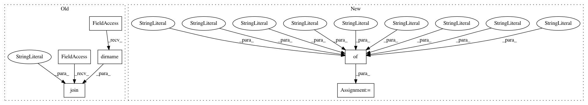

86657ce824ee70a03b43f218de2220bd36fefc4e,qcengine/tests/test_config.py,,opt_state_auto,#,60
Before Change
tmp = copy.deepcopy(dc.config._globals)
base_path = os.path.dirname(os.path.abspath(__file__))
dc.load_options(os.path.join(base_path, "conf_auto.yaml"))
yield
After Change
old_globals = copy.deepcopy(dc.config._globals)
old_environ = dict(os.environ)
config = {
"default_compute": {
"psi_path": "/home/user/psi4",
"jobs_per_node": 1,
"nthreads_per_job": "auto",
"memory_per_job": "auto",
"scratch_directory": "$TMPDIR"
}
}
os.environ["TMPDIR"] = "/tmp/"
dc.load_options(config)
In pattern: SUPERPATTERN
Frequency: 3
Non-data size: 6
Instances
Project Name: MolSSI/QCEngine
Commit Name: 86657ce824ee70a03b43f218de2220bd36fefc4e
Time: 2018-08-14
Author: malorian@me.com
File Name: qcengine/tests/test_config.py
Class Name:
Method Name: opt_state_auto
Project Name: rtavenar/tslearn
Commit Name: 435550e4d9b6385b454ad58daa770d98174f46c7
Time: 2017-06-20
Author: romain.tavenard@univ-rennes2.fr
File Name: tslearn/docs/conf.py
Class Name:
Method Name:
Project Name: MolSSI/QCEngine
Commit Name: fcb2a9e425f2bc873f3f32072b251de63a6e7edc
Time: 2018-08-14
Author: malorian@me.com
File Name: qcengine/tests/test_config.py
Class Name:
Method Name: opt_state_basic